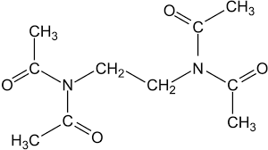
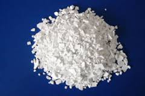

Properties of acids

Acids are complex chemical substances which contain
hydrogen atoms that can be substituted by the atom of metal to form a salt.
Acids differ in basicity: Basicity is determined by the number of hydrogen
atoms included in their composition. For example, sulphur - H2SO4
- dibasic, because it is composed of 2 hydrogen atoms.
Acid also share on oxygen
-containing and not containing oxygen.
For example, HCl - does not contain atoms of oxygen,
and H2CO3
-carbonic acid contains 3 atoms of oxygen and is oxygenated.
News

Now let consider the properties of acids and their chemical reaction
with simple and complex substances